ПЕРЕДНЕЕ СИДЕНЬЕ В СБОРЕ (с ручным приводом) > РАЗБОРКА |
| 1. СНИМИТЕ РУЧКУ ОТПУСКАНИЯ РЕГУЛЯТОРА НАКЛОНА ЛЕВОГО СИДЕНЬЯ |
 |
Поднимите ручку отпускания регулятора угла наклона, чтобы открыть захват. С помощью отвертки освободите захват и снимите ручку.
| *1 | Защитная клейкая лента |
| 2. СНИМИТЕ РУКОЯТКУ РЕГУЛЯТОРА ПОЛОЖЕНИЯ ЛЕВОГО СИДЕНЬЯ ПО ВЕРТИКАЛИ (для стороны водителя) |
| 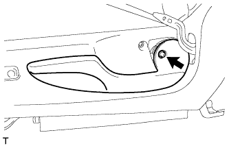 |
Выверните винт и снимите ручку.
| 3. СНИМИТЕ ЗАЩИТНЫЙ ЩИТОК ПОДУШКИ ЛЕВОГО ПЕРЕДНЕГО СИДЕНЬЯ |
 |
Выверните винт.
С помощью съемника молдингов освободите 4 захвата и фиксатор и снимите защитный щиток подушки.
 |
Со стороны водителя:
Открепите 5 зажимов жгута проводов и отсоедините 2 разъема.
| 4. СНИМИТЕ ПЕРЕКЛЮЧАТЕЛЬ ЭЛЕКТРОПРИВОДА ОПОРЫ ПОЯСНИЦЫ (со стороны водителя) |
| 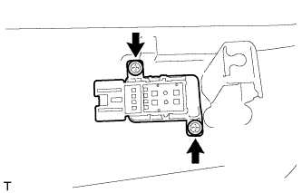 |
Выверните 2 винта и снимите переключатель.
| 5. СНИМИТЕ ВНУТРЕННИЙ ЗАЩИТНЫЙ ЩИТОК ПОДУШКИ ЛЕВОГО ПЕРЕДНЕГО СИДЕНЬЯ |
| 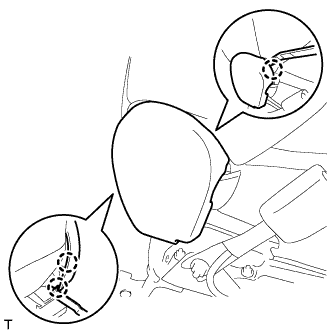 |
С помощью съемника молдингов освободите 3 захвата и снимите защитный щиток подушки.
| 6. СНИМИТЕ ВНУТРЕННИЙ ЗАЩИТНЫЙ ЩИТОК ПОДУШКИ ПРАВОГО ПЕРЕДНЕГО СИДЕНЬЯ (со стороны переднего пассажира) |
 |
С помощью съемника молдингов освободите 4 захвата и снимите защитный щиток подушки.
| 7. СНИМИТЕ ЗАМОК РЕМНЯ БЕЗОПАСНОСТИ ЛЕВОГО ПЕРЕДНЕГО СИДЕНЬЯ В СБОРЕ |
Со стороны водителя:
Отсоедините разъем и освободите 4 зажима.
Со стороны переднего пассажира:
Отсоедините 2 разъема и освободите 3 зажима.
 |
Отверните гайку и снимите замок ремня безопасности переднего сиденья.
| 8. СНИМИТЕ СПИНКУ ПЕРЕДНЕГО РАЗДЕЛЬНОГО СИДЕНЬЯ В СБОРЕ |
 |
Снимите резиновую ленту с пружины подушки сиденья.
| 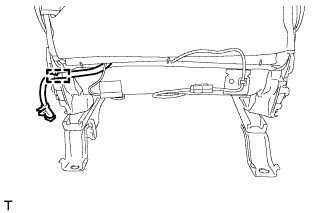 |
Со стороны водителя:
Освободите зажим и отсоедините жгут проводов сиденья № 2.
 |
Для моделей с системой подогрева сидений:
Отсоедините разъем подогревателя сиденья и освободите зажим жгута проводов.
| 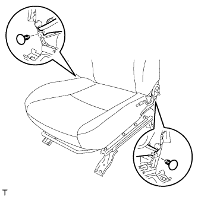 |
Для модели с фиксатором:
С помощью съемника фиксаторов освободите 2 фиксатора.
| 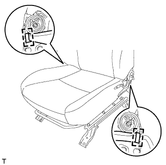 |
Для модели с креплением:
Отцепите 2 крюка.
| 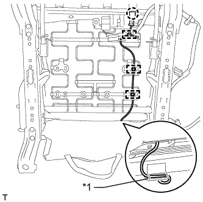 |
Для моделей с боковой подушкой безопасности переднего сиденья:
Освободите захват и отсоедините разъем подушки безопасности.
Освободите 3 зажима жгута проводов подушки безопасности.
Отсоедините крепежную ленту и откройте крышку.
| *1 | Крепежная лента |
Отсоедините жгут проводов подушки безопасности.
| 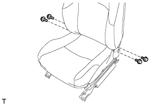 |
Выверните 4 болта и снимите спинку сиденья в сборе.
| 9. СНИМИТЕ КОЛПАЧОК |
| 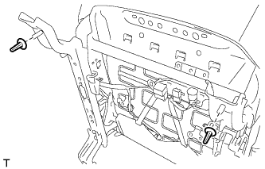 |
Снимите 2 колпачка.
| 10. СНИМИТЕ НАКЛАДКУ НОЖЕК ЛЕВОГО ПЕРЕДНЕГО СИДЕНЬЯ |
| 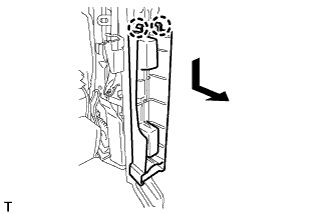 |
Освободите 2 захвата.
Переместите накладку в направлении, указанном на рисунке стрелкой, чтобы снять ее.
| 11. СНИМИТЕ ОБИВКУ ПОДУШКИ СИДЕНЬЯ ВМЕСТЕ С ПОДУШКОЙ |
 |
Для моделей с системой подогрева сидений:
Отсоедините разъем подогревателя сиденья и открепите 3 зажима жгута проводов.
Отсоедините крепления.

 |
Со стороны переднего пассажира:
Освободите захват и отсоедините разъем.
Снимите обивку подушки сиденья вместе с подушкой.
| 12. СНИМИТЕ ОБИВКУ ПОДУШКИ РАЗДЕЛЬНОГО ПЕРЕДНЕГО СИДЕНЬЯ |
 |
Снимите витковые пружины и обивку подушки сиденья с подушки сиденья.
| 13. СНИМИТЕ ПОДОГРЕВАТЕЛЬ ПОДУШКИ ЛЕВОГО ПЕРЕДНЕГО СИДЕНЬЯ В СБОРЕ (для моделей с системой подогрева сидений) |
 |
Срежьте закрепки и снимите подогреватель подушки переднего сиденья с обивки подушки переднего сиденья.
| *1 | Стяжка |
| 14. СНИМИТЕ ЛЕВУЮ ВНУТРЕННЮЮ КРЫШКУ РЕГУЛЯТОРА НАКЛОНА |
| 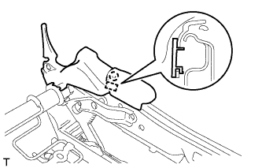 |
Освободите захват и направляющую, а затем снимите накладку.
| 15. СНИМИТЕ ЛЕВЫЙ НИЖНИЙ ЗАЩИТНЫЙ ЩИТОК ПОДУШКИ ПЕРЕДНЕГО СИДЕНЬЯ |
| 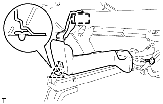 |
Выверните винт.
Освободите крепление и фиксатор, а затем снимите защитный щиток подушки.
| 16. СНИМИТЕ ПРАВЫЙ НИЖНИЙ ЗАЩИТНЫЙ ЩИТОК ПОДУШКИ ПЕРЕДНЕГО СИДЕНЬЯ |
Выверните винт.
Освободите крепление и фиксатор, а затем снимите защитный щиток подушки.
| 17. СНИМИТЕ КРАЕВОЕ УКРЕПЛЕНИЕ ПОДУШКИ ЛЕВОГО ПЕРЕДНЕГО СИДЕНЬЯ |
| 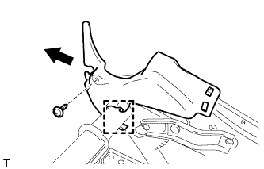 |
Выверните винт.
Переместите защитный элемент в направлении, указанном на рисунке стрелкой, чтобы освободить крепление, и снимите защитный элемент.
| 18. СНИМИТЕ КРАЕВОЕ УКРЕПЛЕНИЕ ПОДУШКИ ПРАВОГО ПЕРЕДНЕГО СИДЕНЬЯ |
| 19. СНИМИТЕ БЛОК УПРАВЛЕНИЯ ПОДОГРЕВАТЕЛЕМ ЛЕВОГО СИДЕНЬЯ В СБОРЕ (для моделей с системой подогрева сидений) |
 |
Отсоедините разъем.
Освободите 2 зажима и снимите блок управления подогревателем сиденья.
| 20. СНИМИТЕ ЖГУТ ЭЛЕКТРОПРОВОДКИ ЛЕВОГО ПЕРЕДНЕГО СИДЕНЬЯ |
Снимите жгут проводов сиденья.
| 21. СНИМИТЕ ЛЕВУЮ ВНУТРЕННЮЮ КРЫШКУ РЕГУЛЯТОРА НАКЛОНА |
| 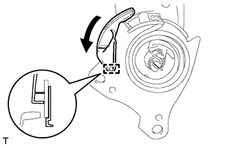 |
Отсоедините направляющую.
Переместите накладку в направлении, указанном на рисунке стрелкой, чтобы снять ее.
| 22. СНИМИТЕ ПРАВУЮ ВНУТРЕННЮЮ КРЫШКУ РЕГУЛЯТОРА НАКЛОНА |
| 23. СНИМИТЕ ОБИВКУ СПИНКИ РАЗДЕЛЬНОГО ПЕРЕДНЕГО СИДЕНЬЯ |
 |
Снимите 3 витковые пружины.
Откройте 2 крепления, а затем откройте обивку спинки сиденья.

| *A | для сиденья с тканевой обивкой | *B | для сиденья с кожаной обивкой |
 |
Для моделей с боковой подушкой безопасности переднего сиденья:
Отверните гайку и снимите держатель обивки спинки сиденья с рамы сиденья.
Отсоедините держатель обивки спинки сиденья от подушки спинки сиденья.
 |
С помощью отвертки отцепите 4 захвата и снимите 2 держателя подголовника.
Снимите витковые пружины и обивку спинки сиденья.

| *A | для типа A | *B | для типа B |
| 24. СНИМИТЕ ПОДОГРЕВАТЕЛЬ СПИНКИ ЛЕВОГО ПЕРЕДНЕГО СИДЕНЬЯ В СБОРЕ (для моделей с системой подогрева сидений) |
 |
Срежьте закрепки, крепящие подогреватель спинки сиденья к обивке спинки сиденья, а затем снимите подогреватель спинки сиденья с обивки спинки сиденья.
| *1 | Стяжка |
| 25. СНИМИТЕ ПОДУШКУ СПИНКИ ПЕРЕДНЕГО РАЗДЕЛЬНОГО СИДЕНЬЯ |
Снимите подушку спинки сиденья.
| 26. СНИМИТЕ ЖГУТ ЭЛЕКТРОПРОВОДКИ СИДЕНЬЯ № 2 (со стороны водителя) |
| 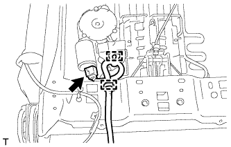 |
Отсоедините разъем.
Освободите 2 зажима и снимите жгут проводов сиденья.